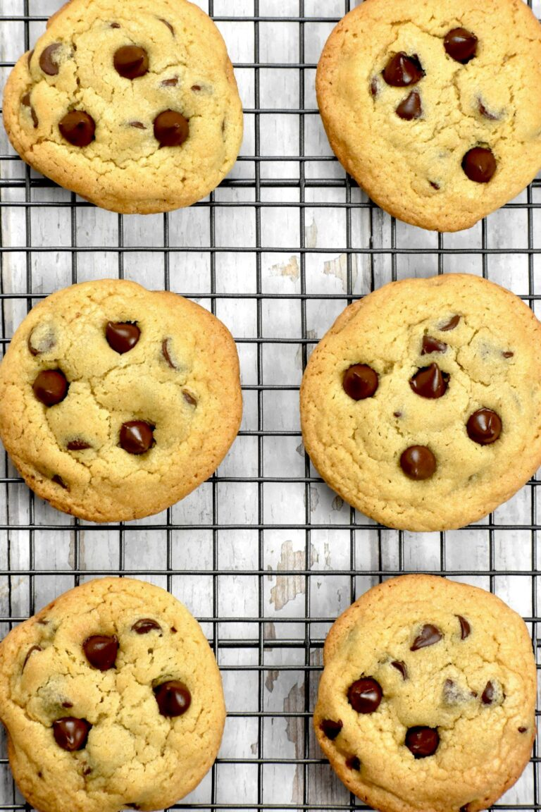

The best tasting cookies in the galaxy"
Ingredients:
- 1 cup butter, room temperature
- 1 cup white sugar
- 1 cup brown sugar
- 2 eggs
- 2 tsp vanilla extract
- 3 cups all purpose flour
- 1 tsp baking soda
- 1/2 tsp baking powder
- 1 tsp sea salt
- 2 cups chocolate chips
Recipe instructions:
- In a bowl, combine flour, baking soda, baking powder and salt. Combine well.
- In a separate large bowl, add butter, white sugar and brown sugar. Whisk together (using a hand mixer, if available) until well combined. Then, whisk in eggs and vanilla.
- Gradually add in flour mixture and combine to a uniform consistency.
- Add in chocolate chips. Use a spoon or fork to mix them into the dough.
- If time allows, cover the bowl with cling wrap and refrigerate at least one hour, or overnight.
- Using a cookie scoop (about 3 tablespoons), create dough balls and arrange them on a parchment paper lined baking sheet.
- If you have kids helping, they can roll the scoops into little spheres, or “meatballs” as kids call them.
- Bake in an oven preheated to 375°F for 8-11 minutes (depending on your oven). They should have a slightly undercooked appearance, just beginning to brown up.
- Allow to cool for 5 minutes, then transfer to a cooling rack to cool completely.
Return to top
Return to main page